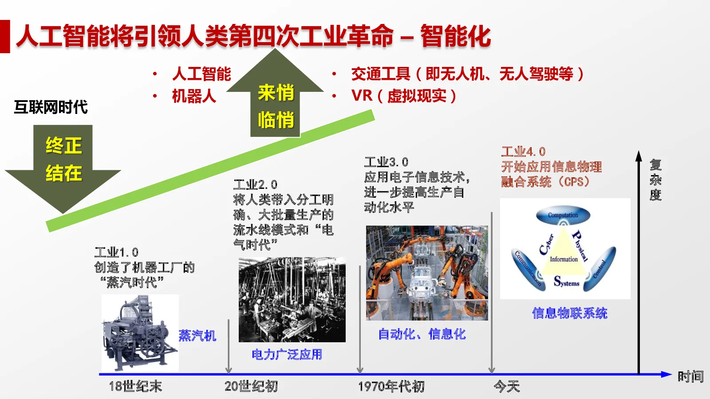
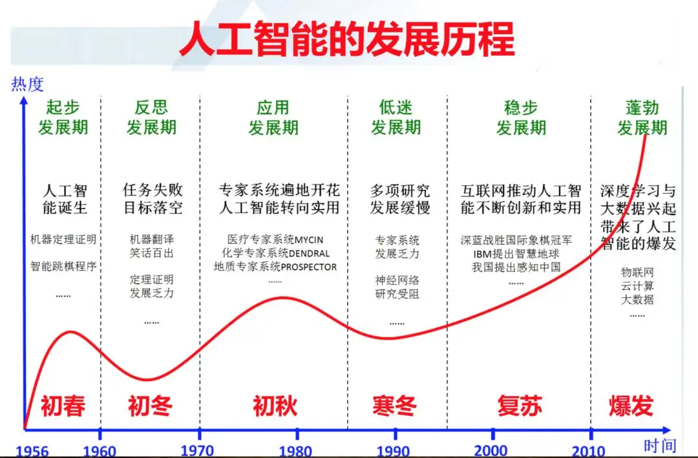

人工智能(Artificial Intelligence，AI）
引入
首先我们来看下面这图片：

人工智能作为一门新兴科技，却被称为第四次工业革命的引领者，足可见其强大。
下面，我将从多个角度带领大家了解人工智能这门新兴科技。
什么是人工智能
人工智能（Artificial Intelligence），英文缩写为AI。它是研究、开发用于模拟、延伸和扩展人的智能的理论、方法、技术及应用系统的一门新的技术科学。
人工智能是计算机科学的一个分支，它企图了解智能的实质，并生产出一种新的能以人类智能相似的方式做出反应的智能机器，该领域的研究包括机器人、语言识别、图像识别、自然语言处理和专家系统等。人工智能从诞生以来，理论和技术日益成熟，应用领域也不断扩大，可以设想，未来人工智能带来的科技产品，将会是人类智慧的“容器”。人工智能可以对人的意识、思维的信息过程的模拟。人工智能不是人的智能，但能像人那样思考、也可能超过人的智能。
人工智能是一门极富挑战性的科学，从事这项工作的人必须懂得计算机知识，心理学和哲学。人工智能是包括十分广泛的科学，它由不同的领域组成，如机器学习，计算机视觉等等，总的说来，人工智能研究的一个主要目标是使机器能够胜任一些通常需要人类智能才能完成的复杂工作。但不同的时代、不同的人对这种“复杂工作”的理解是不同的。
2017年12月，人工智能入选“2017年度中国媒体十大流行语”。

人工智能的研究内容
人工智能的研究是高度技术性和专业的，各分支领域都是深入且各不相通的，因而涉及范围极广。人工智能学科研究的主要内容包括：知识表示、自动推理和搜索方法、机器学习和知识获取、知识处理系统、自然语言理解、计算机视觉、智能机器人、自动程序设计等方面。
1）知识表示是人工智能的基本问题之一，推理和搜索都与表示方法密切相关。常用的知识表示方法有：逻辑表示法、产生式表示法、语义网络表示法和框架表示法等。
2）常识，自然为人们所关注，已提出多种方法，如非单调推理、定性推理就是从不同角度来表达常识和处理常识的。
3）问题求解中的自动推理是知识的使用过程，由于有多种知识表示方法，相应地有多种推理方法。推理过程一般可分为演绎推理和非演绎推理。谓词逻辑是演绎推理的基础。结构化表示下的继承性能推理是非演绎性的。由于知识处理的需要，近几年来提出了多种非演泽的推理方法，如连接机制推理、类比推理、基于示例的推理、反绎推理和受限推理等。
4）搜索是人工智能的一种问题求解方法，搜索策略决定着问题求解的一个推理步骤中知识被使用的优先关系。可分为无信息导引的盲目搜索和利用经验知识导引的启发式搜索。启发式知识常由启发式函数来表示，启发式知识利用得越充分，求解问题的搜索空间就越小。典型的启发式搜索方法有A*、AO*算法等。近几年搜索方法研究开始注意那些具有百万节点的超大规模的搜索问题。
5）机器学习是人工智能的另一重要课题。机器学习是指在一定的知识表示意义下获取新知识的过程，按照学习机制的不同，主要有归纳学习、分析学习、连接机制学习和遗传学习等。
6）知识处理系统主要由知识库和推理机组成。知识库存储系统所需要的知识，当知识量较大而又有多种表示方法时，知识的合理组织与管理是重要的。推理机在问题求解时，规定使用知识的基本方法和策略，推理过程中为记录结果或通信需设数据库或采用黑板机制。如果在知识库中存储的是某一领域(如医疗诊断)的专家知识，则这样的知识系统称为专家系统。为适应复杂问题的求解需要，单一的专家系统向多主体的分布式人工智能系统发展，这时知识共享、主体间的协作、矛盾的出现和处理将是研究的关键问题。
人工智能的研究可以分为几个技术问题。其分支领域主要集中在解决具体问题，其中之一是，如何使用各种不同的工具完成特定的应用程序。AI的核心问题包括推理、知识、规划、学习、交流、感知、移动和操作物体的能力等。强人工智能目前仍然是该领域的长远目标。目前比较流行的方法包括统计方法，计算智能和传统意义的AI。目前有大量的工具应用了人工智能，其中包括搜索和数学优化、逻辑推演。而基于仿生学、认知心理学，以及基于概率论和经济学的算法等等也在逐步探索当中。
人工智能的应用领域

1、问题求解
人工智能的第一大成就是下棋程序，在下棋程度中应用的某些技术，如向前看几步，把困难的问题分解成一些较容易的子问题，发展成为搜索和问题归纳这样的人工智能基本技术。今天的计算机程序已能够达到下各种方盘棋和国际象棋的锦标赛水平。但是，尚未解决包括人类棋手具有的但尚不能明确表达的能力。如国际象棋大师们洞察棋局的能力。另一个问题是涉及问题的原概念，在人工智能中叫问题表示的选择，人们常能找到某种思考问题的方法，从而使求解变易而解决该问题。到目前为止，人工智能程序已能知道如何考虑它们要解决的问题，即搜索解答空间，寻找较优解答。
2、逻辑推理与定理证明
逻辑推理是人工智能研究中最持久的领域之一，其中特别重要的是要找到一些方法，只把注意力集中在一个大型的数据库中的有关事实上，留意可信的证明，并在出现新信息时适时修正这些证明。对数学中臆测的题。定理寻找一个证明或反证，不仅需要有根据假设进行演绎的能力，而且许多非形式的工作，包括医疗诊断和信息检索都可以和定理证明问题一样加以形式化，因此，在人工智能方法的研究中定理证明是一个极其重要的论题。
3、自然语言处理
自然语言的处理是人工智能技术应用于实际领域的典型范例，经过多年艰苦努力，这一领域已获得了大量令人注目的成果。目前该领域的主要课题是：计算机系统如何以主题和对话情境为基础，注重大量的常识——世界知识和期望作用，生成和理解自然语言。这是一个极其复杂的编码和解码问题。
4、智能信息检索技术
信息获取和精化技术已成为当代计算机科学与技术研究中迫切需要研究的课题，将人工智能技术应用于这一领域的研究是人工智能走向广泛实际应用的契机与突破口。
5、专家系统
专家系统是目前人工智能中最活跃、最有成效的一个研究领域,它是一种具有特定领域内大量知识与经验的程序系统。近年来，在“ 专家系统”或“ 知识工程”的研究中已出现了成功和有效应用人工智能技术的趋势。人类专家由于具有丰富的知识，所以才能达到优异的解决问题的能力。那么计算机程序如果能体现和应用这些知识，也应该能解决人类专家所解决的问题，而且能帮助人类专家发现推理过程中出现的差错，现在这一点已被证实。如在矿物勘测、化学分析、规划和医学诊断方面，专家系统已经达到了人类专家的水平。成功的例子如：PROSPECTOR系统（用于地质学的专家系统）发现了一个钼矿沉积，价值超过1亿美元。DENDRL系统的性能已超过一般专家的水平，可供数百人在化学结构分析方面的使用。MY CIN系统可以对血液传染病的诊断治疗方案提供咨询意见。经正式鉴定结果，对患有细菌血液病、脑膜炎方面的诊断和提供治疗方案已超过了这方面的专家。
主要成果
人机对弈
1996年2月10～17日， GARRY KASPAROV以4：2战胜“深蓝” （DEEP BLUE）。
1997年5月3～11日， GARRY KASPAROV以2.5：3.5输于改进后的“深蓝”。
2003年2月GARRY KASPAROV 3:3战平 “小深”（DEEP JUNIOR）。
2003年11月GARRY KASPAROV 2:2战平 “X3D德国人” (X3D-FRITZ）。
模式识别
采用 $模式识别引擎，分支有2D识别引擎 ，3D识别引擎，驻波识别引擎以及多维识别引擎
2D识别引擎已推出指纹识别，人像识别 ，文字识别，图像识别 ，车牌识别；驻波识别引擎已推出语音识别
自动工程
自动驾驶（OSO系统）
印钞工厂（￥流水线）
猎鹰系统（YOD绘图）
知识工程
以知识本身为处理对象，研究如何运用人工智能和软件技术，设计、构造和维护知识系统
专家系统
智能搜索引擎
计算机视觉和图像处理
机器翻译和自然语言理解
数据挖掘和知识发现